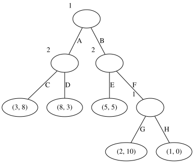
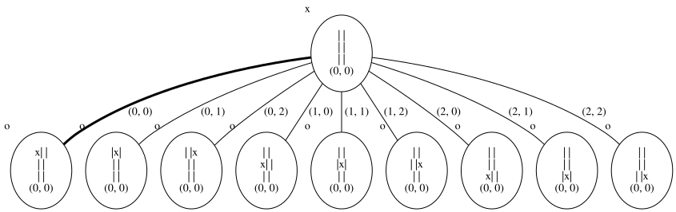
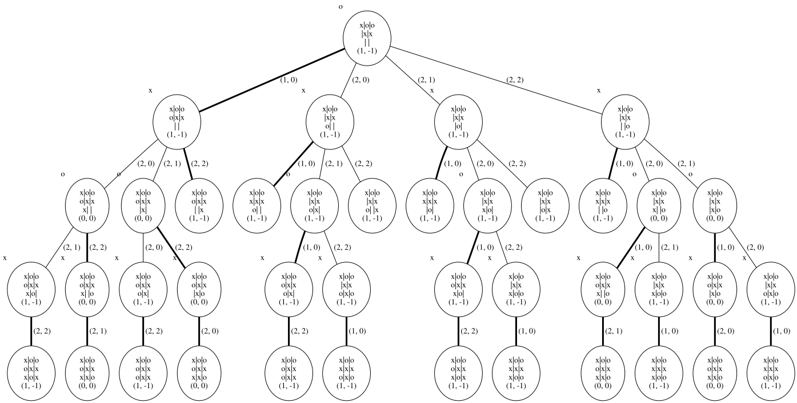

Backward induction#
Learning outcomes
The learning outcomes of this chapter are:
Manually apply backward induction to solve small-scale extensive form games.
Design and implement a backward induction algorithm to solve medium-scale extensive form games automatically.
Overview#
Backward induction is a model-based technique for solving extensive form games. It solves this by recursively calculating the sub-game equilibrium for each sub-game and then using this to solve the parent node of each subgame. Because it solves subgames first, it is effectively solving the game backwards.
The intuition is as follows: starting at the terminal nodes of the tree (those were \(A(s)\) is empty), for the parent, calculate the best move for the agent whose turn it is. This gives us the sub-game equilibrium for the smallest sub-games in the game. As the solutions are reward tuples themselves, we can solve the parent of the parents by using the parent solution as reward for the sub-game, which gives us the sub-game equilibrium for the game that starts at the parents of the parents of the terminal nodes. We progressively induct these values backward up the tree until we reach the start node.
In the pure backward induction that we cover here, the assumption is that only terminal nodes have rewards. If we want to model any situations in which non-terminal nodes have rewards, we simply sum all rewards along the path to the terminal node. Therefore, this solution generalises to the definition of extensive form games in the previous section.
Algorithm#
In the following algorithm, \(best\_child\) is an N-tuple that is used to find the best child value for whose turn it is; while \(best\_child(P(s))\) and \(child\_reward(P(s))\) return the value from the \(best\_child\) and \(child\_reward\) tuple for the player who is choosing the action from state \(s\).
Algorithm 18 (Backward induction)
\( \begin{array}{l} \alginput:\ \text{Extensive form game}\ G = (N, Agt, S, s_0, A, T, r)\\ \algoutput:\ \text{Sub-game equilibrium for each state}\ s \in S\\[2mm] \algreturn\ BackwardInduction(s_0)\\[2mm] \algfunction\ BackwardInduction(s \in S) \\ \quad\quad \algif\ A(s) = \emptyset\ \algthen \\ \quad\quad\quad\quad \algreturn\ r(s) \\ \quad\quad best\_child \leftarrow (-\infty, \ldots, -\infty) \\ \quad\quad \algforeach\ a \in A(s) \\ \quad\quad\quad\quad s' \leftarrow T(s,a) \\ \quad\quad\quad\quad child\_reward \leftarrow BackwardInduction(s') \\ \quad\quad\quad\quad \algif\ child\_reward(P(s)) > best\_child(P(s))\ \algthen \\ \quad\quad\quad\quad\quad\quad best\_child \leftarrow child\_reward \\ \quad\quad \algreturn\ best\_child \end{array} \)
So, the solution above is a recursive algorithm that returns the reward tuple for a terminal node, and otherwise finds the best reward tuple for the children of the node. However, “best” is relative to the player whose turn it is. A rational player will choose the outcome that is best for them when it is their turn. The final output of the algorithm is the reward at the terminal state for whose turn it is, which is the sub-game perfect equilibrium for the entire game.
The algorithm can be modified in a straightforward manner to return the paths and strategies for each player by collecting this information at each point.
Implementation#
The implementation for this is straightforward from the algorithm above:
from mastering_rl.extensive_form_games.extensive_form_game import GameNode
class BackwardInduction:
def __init__(self, game, do_cache=False):
self.game = game
self.do_cache = do_cache
self.cache = dict()
def backward_induction(self, state):
if self.game.is_terminal(state):
node = GameNode(state, None, self.game.get_reward(state))
return node
best_child = None
best_action = None
player = self.game.get_player_turn(state)
children = dict()
for action in self.game.get_actions(state):
next_state = self.game.get_transition(state, action)
child = self.backward_induction(next_state)
if best_child is None or child.value[player] > best_child.value[player]:
if best_child is not None:
best_child.is_best_action = False
child.is_best_action = True
best_child = child
children[action] = child
node = GameNode(state, player, best_child.value, children=children)
return node
def backward_induction_with_cache(self, state):
state_key = self.game.to_string(state)
if self.do_cache and state_key in self.cache.keys():
return self.cache[state_key]
if self.game.is_terminal(state):
node = GameNode(state, None, self.game.get_reward(state))
if self.do_cache:
self.cache[state_key] = node
return node
best_child = None
best_action = None
player = self.game.get_player_turn(state)
children = dict()
for action in self.game.get_actions(state):
next_state = self.game.get_transition(state, action)
child = self.backward_induction(next_state)
if best_child is None or child.value[player] > best_child.value[player]:
if best_child is not None:
best_child.is_best_action = False
child.is_best_action = True
best_child = child
children[action] = child
node = GameNode(state, player, best_child.value, children=children)
if self.do_cache:
self.cache[state_key] = node
return node
Instead of simply returning the best value from the game, we construct an entire strategy profile for all players using the GameNode objects. The result is a game tree with nodes annotated by their value that is induced up the tree.
Consider the following example, which is just an abstract game with two players:
from mastering_rl.extensive_form_games.extensive_form_game import ExtensiveFormGame
ONE = "1"
TWO = "2"
class AbstractExtensiveFormGame(ExtensiveFormGame):
"""Get the list of players for this game as a list [1, ..., N]"""
def get_players(self):
return [ONE, TWO]
""" Get the valid actions at a state """
def get_actions(self, state):
actions = dict()
actions[1] = ["A", "B"]
actions[2] = ["C", "D"]
actions[3] = ["E", "F"]
actions[7] = ["G", "H"]
if state in actions.keys():
return actions[state]
else:
return []
""" Return the state resulting from playing an action in a state """
def get_transition(self, state, action):
transitions = dict()
if state == 1:
transitions["A"] = 2
transitions["B"] = 3
elif state == 2:
transitions["C"] = 4
transitions["D"] = 5
elif state == 3:
transitions["E"] = 6
transitions["F"] = 7
elif state == 7:
transitions["G"] = 8
transitions["H"] = 9
else:
transitions[action] = []
return transitions[action]
""" Return the reward for a state, return as a dictionary mapping players to rewards """
def get_reward(self, state):
rewards = dict()
if state in [4, 5, 6, 8, 9]:
rewards[4] = {ONE: 3, TWO: 8}
rewards[5] = {ONE: 8, TWO: 3}
rewards[6] = {ONE: 5, TWO: 5}
rewards[8] = {ONE: 2, TWO: 10}
rewards[9] = {ONE: 1, TWO: 0}
return rewards[state]
else:
return {ONE: 0, TWO: 0}
""" Return true if and only if state is a terminal state of this game """
def is_terminal(self, state):
return state in [4, 5, 6, 8, 9]
""" Return the player who selects the action at this state (whose turn it is) """
def get_player_turn(self, state):
if state in [1, 7]:
return ONE
else:
return TWO
""" Return the initial state of this game """
def get_initial_state(self):
return 1
def to_string(self, state):
return str(state)
We can solve this with the following code:
from mastering_rl.extensive_form_games.abstract_extensive_form_game import (
AbstractExtensiveFormGame,
)
from mastering_rl.extensive_form_games.backward_induction import BackwardInduction
from mastering_rl.utils.graph_visualisation import GraphVisualisation
game = AbstractExtensiveFormGame()
backward_induction = BackwardInduction(game)
solution = backward_induction.backward_induction(game.get_initial_state())
gv = GraphVisualisation(max_level=5)
graph = gv.node_to_graph(game, game.game_tree(), print_value=False)
graph

We can see the subgame perfect-equilibria in the bottom-left subgame is (3,8) because player 2 will choose C rather than D, preferring a payoff of 8 more than 3. This value is propagated to the parent node. Subsequently, this becomes the value of the entire game as player 1 will choose A over B, preferring a payoff of 3 rather than 2 in the other sub-game.
Tictactoe#
For a slightly larger game (which is still small by standards of games), let’s look at Tictactoe. The game itself is too large to display as a game tree, but let’s just look at two parts. First, we show just the root node and its children. The equilibria of the sub-games show that even going first, there is no way to ensure you win:
from mastering_rl.extensive_form_games.tictactoe import TicTacToe
tictactoe = TicTacToe()
backward_induction = BackwardInduction(tictactoe)
solution = backward_induction.backward_induction(tictactoe.get_initial_state())
gv = GraphVisualisation(max_level = 1)
tictactoe_subgraph = gv.node_to_graph(tictactoe, solution, print_state = True, print_value = True)
tictactoe_subgraph

Next, we show that from the state where the top row of the game is x-o-o, the second is e-e-x (where e is ‘empty’), and the third row is empty, playing in the middle cell will guarantee a win for ‘x’ to win regardless what player ‘o’ does:
from mastering_rl.extensive_form_games.tictactoe import TicTacToe
tictactoe = TicTacToe()
backward_induction = BackwardInduction(tictactoe)
state = [['x', 'o', 'o'],
[' ', ' ', 'x'],
[' ', ' ', ' ']]
next_state = tictactoe.get_transition(state, (1, 1))
solution = backward_induction.backward_induction(next_state)
gv = GraphVisualisation(max_level = 100)
tictactoe_subgraph = gv.node_to_graph(tictactoe, solution, print_state = True, print_value = True)
tictactoe_subgraph

As a result, the equilibrium of this sub-game is (1, -1). No matter which move player ‘o’ takes, they cannot draw or win if player ‘x’ follows the strategy highlighted.